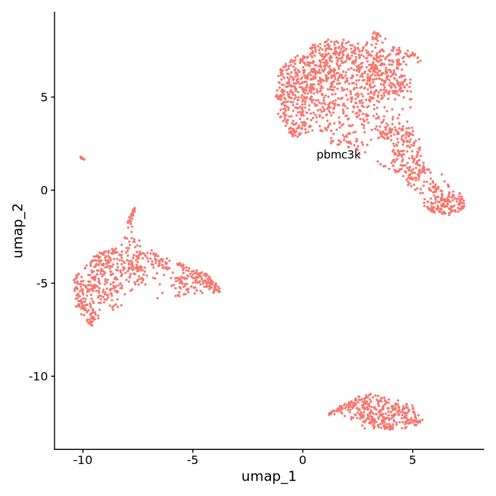
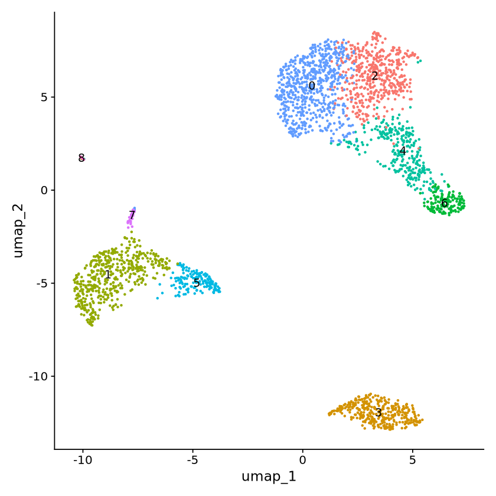

options(warn=-1) # default is warn=0
# suppress conflict warnings at package load
library(dplyr, warn.conflicts=FALSE)
# suppress startup messages at package load
suppressPackageStartupMessages(library(tidyverse))
suppressPackageStartupMessages(library(Seurat))
suppressPackageStartupMessages(library(Matrix))RDS to mtx
# Load the PBMC dataset
expression_matrix <- Read10X(data.dir = "../input/filtered_gene_bc_matrices/hg19/")
genes_id <- read.table(
"../input/filtered_gene_bc_matrices/hg19/genes.tsv",
header=FALSE,
sep="\t",
)
# Initialize the Seurat object with the raw (non-normalized data).
seurat_obj <- CreateSeuratObject(
counts = expression_matrix,
project = "pbmc3k"
)
seurat_objAn object of class Seurat
32738 features across 2700 samples within 1 assay
Active assay: RNA (32738 features, 0 variable features)
1 layer present: countsbasic QC
seurat_obj <- CreateSeuratObject(
counts = expression_matrix,
project = "pbmc3k",
min.cells = 3,
min.features = 200)
seurat_objAn object of class Seurat
13714 features across 2700 samples within 1 assay
Active assay: RNA (13714 features, 0 variable features)
1 layer present: counts# Standard pre-processing
seurat_obj[["percent.mt"]] <- PercentageFeatureSet(seurat_obj, pattern = "^MT-")
seurat_obj <- subset(
seurat_obj,
subset = nFeature_RNA > 200 & nFeature_RNA < 2500 & percent.mt < 5)
seurat_objAn object of class Seurat
13714 features across 2638 samples within 1 assay
Active assay: RNA (13714 features, 0 variable features)
1 layer present: countsseurat_obj <- NormalizeData(object = seurat_obj, verbose = FALSE)
seurat_obj <- FindVariableFeatures(object = seurat_obj, verbose = FALSE)
seurat_obj <- ScaleData(object = seurat_obj, verbose = FALSE)
seurat_obj <- RunPCA(
object = seurat_obj,
features = VariableFeatures(object = seurat_obj),
verbose = FALSE)
seurat_obj <- FindNeighbors(
object = seurat_obj, dims = 1:10, verbose = FALSE)
seurat_obj <- FindClusters(
object = seurat_obj, resolution = 0.5, verbose = FALSE)
seurat_obj <- RunUMAP(
object = seurat_obj, dims = 1:10, verbose = FALSE)DimPlot(
object = seurat_obj,
label=TRUE,
reduction = "umap",
) + NoLegend()
head(seurat_obj[[]])| orig.ident | nCount_RNA | nFeature_RNA | percent.mt | RNA_snn_res.0.5 | seurat_clusters | |
|---|---|---|---|---|---|---|
| <fct> | <dbl> | <int> | <dbl> | <fct> | <chr> | |
| AAACATACAACCAC-1 | pbmc3k | 2419 | 779 | 3.0177759 | 2 | NA |
| AAACATTGAGCTAC-1 | pbmc3k | 4903 | 1352 | 3.7935958 | 3 | NA |
| AAACATTGATCAGC-1 | pbmc3k | 3147 | 1129 | 0.8897363 | 2 | NA |
| AAACCGTGCTTCCG-1 | pbmc3k | 2639 | 960 | 1.7430845 | 1 | NA |
| AAACCGTGTATGCG-1 | pbmc3k | 980 | 521 | 1.2244898 | 6 | NA |
| AAACGCACTGGTAC-1 | pbmc3k | 2163 | 781 | 1.6643551 | 2 | NA |
# seurat_obj[[]] <- mutate(
# seurat_obj[[]],
# seurat_clusters = case_when(
# seurat_clusters == 0 ~ "Naive CD4 T",
# seurat_clusters == 1 ~ "CD14+ Mono",
# seurat_clusters == 2 ~ "Memory CD4 T",
# seurat_clusters == 3 ~ "B",
# seurat_clusters == 4 ~ "CD8 T",
# seurat_clusters == 5 ~ "FCGR3A+ Mono",
# seurat_clusters == 6 ~ "NK",
# seurat_clusters == 7 ~ "DC",
# seurat_clusters == 8 ~ "Platelet",
# TRUE ~ seurat_clusters
# ))# conditions <- c(0, 1, 2, 3, 4, 5, 6, 7, 8)
# new_cluster_ids <- c(
# "Naive CD4 T", "CD14+ Mono",
# "Memory CD4 T", "B", "CD8 T", "FCGR3A+ Mono",
# "NK", "DC", "Platelet"
# )
# seurat_obj[[]]$seurat_clusters <- replace(
# seurat_obj[[]]$seurat_clusters,
# seurat_obj[[]]$seurat_clusters %in% conditions,
# new_cluster_ids
# )
# DimPlot(
# seurat_obj,
# reduction = "umap",
# group.by="seurat_clusters") + NoLegend()ERROR while rich displaying an object: Error in `palette()`:
! Must request at least one colour from a hue palette.
Traceback:
1. tryCatch(withCallingHandlers({
. if (!mime %in% names(repr::mime2repr))
. stop("No repr_* for mimetype ", mime, " in repr::mime2repr")
. rpr <- repr::mime2repr[[mime]](obj)
. if (is.null(rpr))
. return(NULL)
. prepare_content(is.raw(rpr), rpr)
. }, error = error_handler), error = outer_handler)
2. tryCatchList(expr, classes, parentenv, handlers)
3. tryCatchOne(expr, names, parentenv, handlers[[1L]])
4. doTryCatch(return(expr), name, parentenv, handler)
5. withCallingHandlers({
. if (!mime %in% names(repr::mime2repr))
. stop("No repr_* for mimetype ", mime, " in repr::mime2repr")
. rpr <- repr::mime2repr[[mime]](obj)
. if (is.null(rpr))
. return(NULL)
. prepare_content(is.raw(rpr), rpr)
. }, error = error_handler)
6. repr::mime2repr[[mime]](obj)
7. repr_text.default(obj)
8. paste(capture.output(print(obj)), collapse = "\n")
9. capture.output(print(obj))
10. withVisible(...elt(i))
11. print(obj)
12. print.patchwork(obj)
13. build_patchwork(plot, plot$layout$guides %||% "auto")
14. lapply(x$plots, plot_table, guides = guides)
15. FUN(X[[i]], ...)
16. plot_table.ggplot(X[[i]], ...)
17. ggplotGrob(x)
18. ggplot_gtable(ggplot_build(x))
19. attach_plot_env(data$plot$plot_env)
20. options(ggplot2_plot_env = env)
21. ggplot_build(x)
22. ggplot_build.ggplot(x)
23. plot$guides$build(npscales, plot$layers, plot$labels, data)
24. build(..., self = self)
25. guides$train(scales, labels)
26. train(..., self = self)
27. Map(function(guide, param, scale, aes) {
. guide$train(param, scale, aes, title = labels[[aes]])
. }, guide = self$guides, param = self$params, aes = self$aesthetics,
. scale = scales)
28. mapply(FUN = f, ..., SIMPLIFY = FALSE)
29. (function (guide, param, scale, aes)
. {
. guide$train(param, scale, aes, title = labels[[aes]])
. })(guide = dots[[1L]][[1L]], param = dots[[2L]][[1L]], aes = dots[[3L]][[1L]],
. scale = dots[[4L]][[1L]])
30. guide$train(param, scale, aes, title = labels[[aes]])
31. train(..., self = self)
32. inject(self$extract_key(scale, !!!params))
33. self$extract_key(scale, title = structure(list(), class = "waiver"),
. theme = NULL, direction = NULL, override.aes = list(size = 3,
. alpha = 1), nrow = NULL, ncol = NULL, reverse = FALSE,
. order = 0L, position = NULL, name = "legend", hash = character(0),
. aesthetic = "colour")
34. extract_key(...)
35. scale$map(breaks)
36. map(..., self = self)
37. self$palette(n)
38. palette(...)
39. cli::cli_abort("Must request at least one colour from a hue palette.")
40. rlang::abort(message, ..., call = call, use_cli_format = TRUE,
. .frame = .frame)
41. signal_abort(cnd, .file)
names(new_cluster_ids) <- levels(seurat_obj)
seurat_obj <- RenameIdents(seurat_obj, new_cluster_ids)
Idents(seurat_obj) <- 'seurat_clusters'
DimPlot(seurat_obj, reduction = "umap", label = TRUE, pt.size = 0.5) + NoLegend()
head(seurat_obj[[]])| orig.ident | nCount_RNA | nFeature_RNA | percent.mt | RNA_snn_res.0.5 | seurat_clusters | |
|---|---|---|---|---|---|---|
| <fct> | <dbl> | <int> | <dbl> | <fct> | <fct> | |
| AAACATACAACCAC-1 | pbmc3k | 2419 | 779 | 3.0177759 | 2 | 2 |
| AAACATTGAGCTAC-1 | pbmc3k | 4903 | 1352 | 3.7935958 | 3 | 3 |
| AAACATTGATCAGC-1 | pbmc3k | 3147 | 1129 | 0.8897363 | 2 | 2 |
| AAACCGTGCTTCCG-1 | pbmc3k | 2639 | 960 | 1.7430845 | 1 | 1 |
| AAACCGTGTATGCG-1 | pbmc3k | 980 | 521 | 1.2244898 | 6 | 6 |
| AAACGCACTGGTAC-1 | pbmc3k | 2163 | 781 | 1.6643551 | 2 | 2 |
output_path = "../output/pbmc3k/"
saveRDS(
seurat_obj,
file = paste0(output_path, "pbmc3k.rds"))RDS to 10x format
seurat_obj <- readRDS(
paste0(output_path, "pbmc3k.rds"))
seurat_objAn object of class Seurat
13714 features across 2638 samples within 1 assay
Active assay: RNA (13714 features, 2000 variable features)
3 layers present: counts, data, scale.data
2 dimensional reductions calculated: pca, umap# Retrieve data in an expression matrix RNA counts matrix
counts <- seurat_obj[["RNA"]]$counts
# class(matrix)
writeMM(counts, file = paste0(output_path,"matrix.mtx"))
barcodes <- colnames(seurat_obj)
write.table(barcodes, file = paste0(output_path,"barcodes.tsv"),
row.names = FALSE, col.names = FALSE, quote = FALSE, sep = "\t")
genes <- rownames(seurat_obj)
gene_ids <- genes
gene_names <- genes
features_df <- data.frame(gene_ids, gene_names)
write.table(features_df, file = paste0(output_path, "genes.tsv"), row.names = FALSE, col.names = FALSE, quote = FALSE, sep = "\t")
# View metadata data frame, stored in object@meta.data
meta_data <- seurat_obj[[]]
write.table(meta_data, file = paste0(output_path, "metadata.tsv"), row.names = TRUE, col.names = TRUE, quote = FALSE, sep = "\t")
# UMAP
umap <- Embeddings(seurat_obj, reduction = "umap")
write.table(umap, file = paste0(output_path, "UMAP.coords.tsv"), row.names = TRUE, col.names = TRUE, quote = FALSE, sep = "\t")
head(umap)NULL| umap_1 | umap_2 | |
|---|---|---|
| AAACATACAACCAC-1 | 2.864640 | 4.076900 |
| AAACATTGAGCTAC-1 | 5.019568 | -12.472298 |
| AAACATTGATCAGC-1 | 4.590423 | 6.898579 |
| AAACCGTGCTTCCG-1 | -6.713953 | -4.744311 |
| AAACCGTGTATGCG-1 | 5.818774 | -1.113903 |
| AAACGCACTGGTAC-1 | 2.456097 | 6.181250 |
# # Before we start Seurat, we first want to convert Ensembl gene ids to HGNC symbols for easier interpretation. Run the code below to replace Ensembl ids with hgnc symbols in rownames of our data matrix.
# library(biomaRt)
# ensembl <- useMart("ensembl", dataset="hsapiens_gene_ensembl")
# bm <- getBM(
# attributes=c("gene_id", "gene_symbol"),
# values=rownames(seurat_obj), mart=ensembl)
# # gene_id <- bm$gene_symbol[match(rownames(seurat_obj), bm$ensembl_gene_id)]
# # sc_data <- as.matrix(sc_data)# # method 1: biomaRt
# # listEnsembl()
# ensembl <- useEnsembl(biomart = "genes")
# datasets <- listDatasets(ensembl)
# ensembl.con <- useMart("ensembl", dataset = 'hsapiens_gene_ensembl')
# attr <- listAttributes(ensembl.con)
# filters <- listFilters(ensembl.con)
# getBM(attributes = c('ensembl_gene_id','external_gene_name'),
# filters = "ensembl_gene_id",
# values = genes,
# mart = ensembl.con)expression_matrix <- ReadMtx(
mtx = paste0(output_path, "matrix.mtx"),
features = paste0(output_path, "genes.tsv"),
cells = paste0(output_path, "barcodes.tsv"))
seurat_obj <- CreateSeuratObject(counts = expression_matrix)
seurat_obj[[]] <- read.table(
paste0(output_path, "metadata.tsv"), stringsAsFactors = F, header = T, row.names = 1)
seurat_objAn object of class Seurat
13714 features across 2638 samples within 1 assay
Active assay: RNA (13714 features, 0 variable features)
1 layer present: countsUMAP_coordinates <- read.table(
paste0(output_path, "UMAP.coords.tsv"), stringsAsFactors = F, header = T, row.names = 1)
UMAP_coordinates_mat <- as(UMAP_coordinates, "matrix")
# Create DimReducObject and add to object
seurat_obj[['umap']] <- CreateDimReducObject(embeddings = UMAP_coordinates_mat, key = "UMAP_", global = T, assay = "RNA")
seurat_objAn object of class Seurat
13714 features across 2638 samples within 1 assay
Active assay: RNA (13714 features, 0 variable features)
1 layer present: counts
2 dimensional reductions calculated: UMAP, umapcolnames(seurat_obj[[]])- 'orig.ident'
- 'nCount_RNA'
- 'nFeature_RNA'
- 'percent.mt'
- 'RNA_snn_res.0.5'
- 'seurat_clusters'
Idents(seurat_obj) <- 'seurat_clusters'DimPlot(seurat_obj, reduction = "umap", label = TRUE) + NoLegend()
head(seurat_object[[]])| orig.ident | nCount_RNA | nFeature_RNA | percent.mt | RNA_snn_res.0.5 | seurat_clusters | |
|---|---|---|---|---|---|---|
| <chr> | <int> | <int> | <dbl> | <int> | <int> | |
| AAACATACAACCAC-1 | pbmc3k | 2419 | 779 | 3.0177759 | 2 | 2 |
| AAACATTGAGCTAC-1 | pbmc3k | 4903 | 1352 | 3.7935958 | 3 | 3 |
| AAACATTGATCAGC-1 | pbmc3k | 3147 | 1129 | 0.8897363 | 2 | 2 |
| AAACCGTGCTTCCG-1 | pbmc3k | 2639 | 960 | 1.7430845 | 1 | 1 |
| AAACCGTGTATGCG-1 | pbmc3k | 980 | 521 | 1.2244898 | 6 | 6 |
| AAACGCACTGGTAC-1 | pbmc3k | 2163 | 781 | 1.6643551 | 2 | 2 |